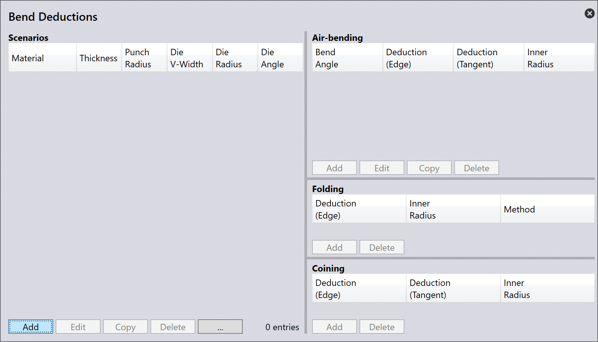

Bend deductions
Bend deductions används för att beräkna den utvecklade längden[1] för en plåtdel. Det krävs för att korrekt producera delar med rätt dimensioner efter bockning.
Bend deductions tar hänsyn till materialets töjning och kompression som sker under bockningsprocessen. Genom att använda bend deductions kan TecZone Bend justera längden på det platta mönstret för att säkerställa att den slutliga bockade delen uppfyller de specificerade dimensionerna.
Bend deductions kan variera beroende på faktorer som materialtyp, tjocklek, bockningsradie och bockningsmetod.
När en 3D-del importeras till TecZone Bend beräknar programvaran automatiskt bend deductions baserat på delens geometri och materialegenskaper. Du kan också manuellt justera bend deductions om det behövs för att finjustera längden på det platta mönstret.
Bend deduction-inställningar
Anpassade bend deductions kan ställas in i Bend Deductions-databasen. För att komma åt detta, klicka på ikonen database och välj Bend Deductions.

Du kan Add lägga till ett nytt bend deduction-scenario eller välja ett befintligt scenario för att Edit redigera eller Delete ta bort det. Du kan också Copy kopiera ett befintligt scenario för att skapa ett nytt med liknande inställningar.

Klicka på Add för att skapa ett nytt bend deduction-scenario. Välj och ange följande parametrar:
-
Material: Välj materialet som bend deductions gäller för.
-
Thickness: Ange plåttjockleken som bend deductions gäller för.
-
Punch radius: Ange radien för det övre verktyget som bend deductions gäller för.
-
V-width type: Välj typ av V-breddsmätning som används.
-
Die V-width: Ange bredden för det nedre verktyget som bend deductions gäller för.
-
Die radius: Ange radien för det nedre verktyget som bend deductions gäller för.
-
Die angle: Ange vinkeln för det nedre verktyget som bend deductions gäller för.
Klicka på OK för att spara det nya scenariot.
Förutom detta kan du välja ett bend deduction-scenario och klicka på alternativet … för att se fler alternativ:

-
Graph: Visar en graf som visar förhållandet mellan bockningsvinkel och bend deduction. Denna visuella representation hjälper till att förstå hur bend deductions ändras med olika bockningsvinklar. För muspekaren över grafens blå och röda linjer för att se specifika värden.

-
Import: Låter dig importera bend deduction-data från en extern CSV-fil.
-
Export: Gör det möjligt att exportera aktuell bend deduction-data till en CSV-fil för säkerhetskopiering eller delning.
-
3rd party: Ger alternativ för att importera bend deduction-data från tredjepartsprogram eller källor.
Bend deduction-typer
TecZone Bend stöder tre typer av bend deductions: Air Bending, Folding och Coining.
Varje typ har sin egen uppsättning parametrar och beräkningar för att korrekt bestämma bend deductions baserat på den bockningsmetod som används.
Air Bending
Air bending är en vanlig bockningsmetod där plåten bockas med en stans och en matris utan att matrisen stängs helt. Denna metod tillåter mer flexibilitet och är lämplig för ett brett spektrum av material och tjocklekar.
För att lägga till bend deductions för air bending, välj ett lämpligt scenario från Bend Deductions-databasen. Klicka på Add för att skapa ett nytt air bending deduction-scenario och ange Bend Angle.

När du anger bockningsvinkeln kommer motsvarande värden för ui:962[Deduction (Edge)], Deduction (Tangent) och Inner Radius att beräknas och visas.
Klicka på OK för att spara den nya air bending deduction.
Folding
Folding eller Hemming är en bockningsmetod där plåten bockas med en stans och en matris som stängs helt, vilket skapar en skarp bockning. Denna metod används ofta för tunnare material och kräver exakt kontroll av bend deductions.

För att lägga till bend deductions för folding, välj ett lämpligt scenario från Bend Deductions-databasen. Klicka på Add för att skapa ett nytt folding deduction-scenario och välj Hemming method.
Klicka på OK för att spara den nya folding deduction.
Coining
Coining är en bockningsmetod där plåten pressas mellan en stans och en matris med högt tryck, vilket resulterar i en exakt och skarp bockning. Denna metod används vanligtvis för tjockare material och kräver noggranna bend deductions.

För att lägga till bend deductions för coining, välj ett lämpligt scenario från Bend Deductions-databasen. Klicka på Add för att skapa ett nytt coining deduction-scenario.
Klicka på OK för att spara den nya coining deduction.